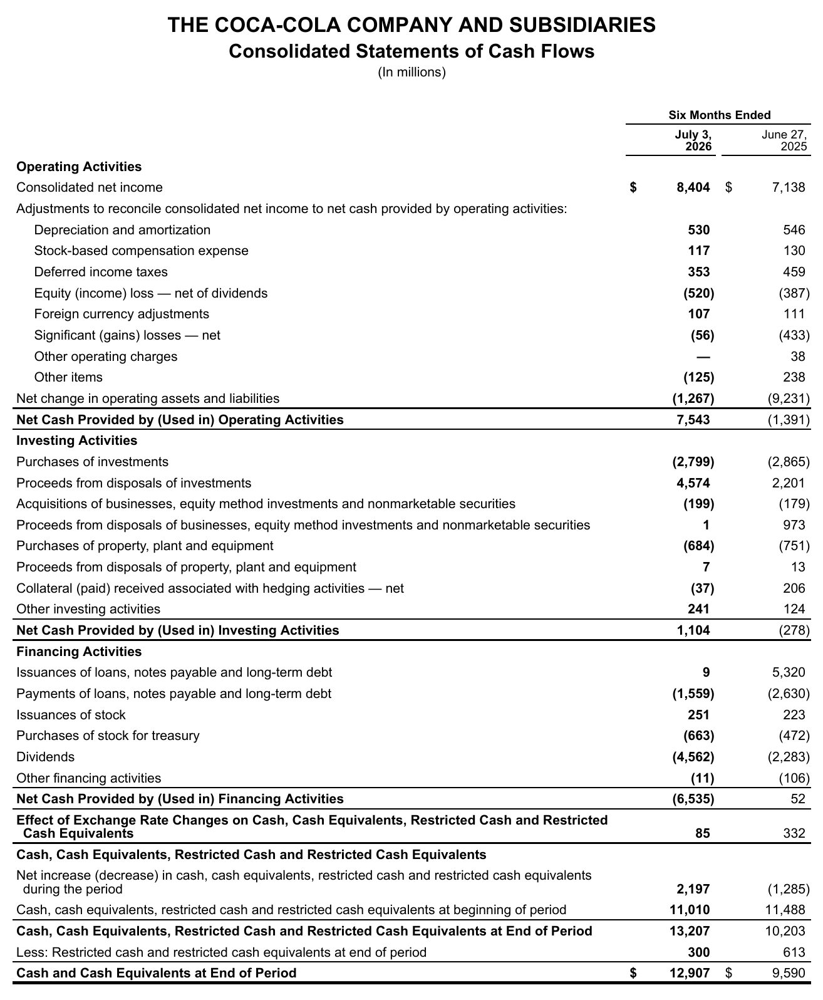
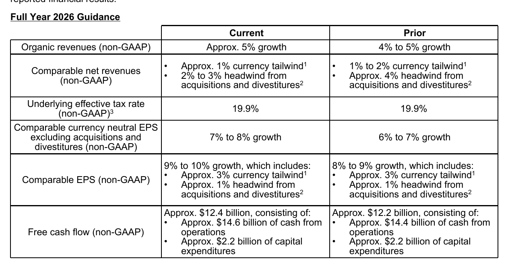

Zahlen

Coca-Cola hebt Jahresprognose nach solidem zweiten Quartal an
Coca-Cola steigert Umsatz und bereinigten Gewinn im zweiten Quartal 2026 und erhöht die Jahresziele für Free Cashflow und Gewinn je Aktie.

Der Getränkekonzern The Coca-Cola Company blickt nach Zuwächsen bei Erlösen und Ertrag optimistischer auf das Gesamtjahr 2026. Sowohl das bereinigte Ergebnis je Aktie als auch der freie Barmittelzufluss sollen höher ausfallen als zuvor veranschlagt. Gleichzeitig stiegen die Umsätze im zweiten Quartal über alle Weltregionen hinweg.
 Eigene Darstellung nach Daten aus: The Coca-Cola Company, Pressemitteilung zum Q2 2026 vom 2026-07-28.
Eigene Darstellung nach Daten aus: The Coca-Cola Company, Pressemitteilung zum Q2 2026 vom 2026-07-28.
Höhere Erlöse und steigende Margen im Quartal
Im abgelaufenen Vierteljahr stieg der Nettoumsatz um 7 % auf 13,4 Milliarden US-Dollar. Organisch, also bereinigt um Wechselkurseffekte sowie Zu- und Verkäufe, betrug das Plus 6 %. Die berichtete operative Marge nach Rechnungslegungsstandard GAAP verbesserte sich dabei um 80 Basispunkte auf 34,9 %.
Zu den wesentlichen Treibern zählten neben Preisanpassungen auch Zuwächse beim Konzentratabsatz. Den stärksten organischen Umsatzzuwachs erzielte das Segment Bottling Investments mit 10 %, während Nordamerika um 7 % zulegte. EMEA und Asien-Pazifik verbuchten ein langsameres organisches Wachstum von 3 % beziehungsweise 2 %. Henrique Braun ordnete den Quartalsverlauf ein:
„Während wir weiterhin ein dynamisches Konsumumfeld erleben, haben wir unsere starken Marken und unser System genutzt, um wertmäßige Marktanteile zu gewinnen und ein Umsatz-, Gewinn- und Ergebniswachstum zu erzielen, während wir gleichzeitig langfristig investieren.“
— Henrique Braun, CEO (aus dem Englischen übersetzt)
Auf der Ergebnisseite stieg der bereinigte Gewinn je Aktie (Non-GAAP) um 11 % auf 0,97 US-Dollar. Währungseffekte stützten diese Entwicklung leicht, während höhere Rohstoffkosten und zeitlich vorgezogene Marketingaufwendungen dämpfend wirkten.
Solide Deckung der Dividende durch den Barmittelzufluss
Für Einkommensinvestoren steht die finanzielle Tragfähigkeit der Ausschüttungen im Mittelpunkt. In den ersten sechs Monaten erwirtschaftete Coca-Cola einen operativen Cashflow von 7.543 Millionen US-Dollar. Nach Abzug der Sachinvestitionen von 684 Millionen US-Dollar verblieb ein rechnerischer Free Cashflow von 6.859 Millionen US-Dollar.

Konzern-Kapitalflussrechnung für die ersten sechs Monate. Quelle: The Coca-Cola Company, Pressemitteilung zum Q2 2026 vom 2026-07-28, S. 12. Ausschnitt nur zugeschnitten, sonst unverändert.Wie der Auszug aus der Kapitalflussrechnung zeigt, zahlte der Konzern im selben Sechsmonatszeitraum 4.562 Millionen US-Dollar an Dividenden aus. Die Dividenden machten damit rechnerisch 67 % des Free Cashflows aus. Unter Berücksichtigung von Aktienrückkäufen im Umfang von 663 Millionen US-Dollar lag die kombinierte Payout Ratio bei rechnerisch 76 % des freien Mittelzuflusses. Der Vergleichszeitraum des Vorjahres endete am 27. Juni 2025 und damit sechs Tage früher als die laufende Periode zum 3. Juli 2026. Dies dürfte das Volumen der verbuchten Zahlungen im Vorjahresvergleich leicht beeinflusst haben.
Anhebung der Jahresziele und offene Risiken
Aufgrund des bisherigen Geschäftsverlaufs hob das Management seine Ziele für das gesamte Geschäftsjahr an. Für den bereinigten Gewinn je Aktie wird nun ein Zuwachs von 9 % bis 10 % erwartet. Auch die Prognose für den Free Cashflow stieg an: Das Unternehmen stellt nun rund 12,4 Milliarden US-Dollar in Aussicht.

Ausblick Gesamtjahr 2026. Quelle: The Coca-Cola Company, Pressemitteilung zum Q2 2026 vom 2026-07-28, S. 7. Ausschnitt nur zugeschnitten, sonst unverändert.Die Prognosetabelle fasst die angehobenen Jahresziele zusammen. Trotz der Zuversicht bestehen operative und finanzielle Unsicherheiten. Im Ausblick weist das Unternehmen ausdrücklich auf den ungelösten Steuerstreit mit der US-Finanzbehörde IRS hin, der in den Non-GAAP-Berechnungen ausgeklammert ist und bei einem ungünstigen Urteil erhebliche Nachzahlungen nach sich ziehen könnte. Zudem belastet in Teilmärkten wie Indien ein verschärfter Preis- und Margendruck, der zu regionalen Marktanteilsverlusten führte.
Die wichtigsten Zahlen im Überblick
| Kennzahl | Wert | Veränderung zum Vorjahr | Quelle |
|---|---|---|---|
| Nettoumsatz | 13,4 Mrd. USD | +7 % | S. 1 |
| Operative Marge | 34,9 % | +80 Bp | S. 1 |
| Vergleichbarer Gewinn je Aktie (Non-GAAP) | 0,97 USD | +11 % | S. 1 |
| Free Cashflow (6 Monate, Non-GAAP) | 6,9 Mrd. USD | – | S. 2 |
Dividendenkennzahlen im Überblick (eigene Berechnung)
| Kennzahl | Wert | Rechenweg |
|---|---|---|
| Dividenden / Free Cashflow (6 Monate) | 67 % | 4.562 ÷ (7.543 − 684) Mio. |
| Dividenden + Rückkäufe / Free Cashflow (6 Monate) | 76 % | (4.562 + 663) ÷ 6.859 Mio. |
Quelle: The Coca-Cola Company, Pressemitteilung zum Q2 2026 vom 2026-07-28. Rechenwege eigene Berechnung. Keine Anlageberatung.
Hinweis: Dieser Text dient der allgemeinen Information und ist weder Anlage-, Steuer- noch Rechtsberatung. Kapitalanlagen sind mit Risiken verbunden, bis hin zum Totalverlust.